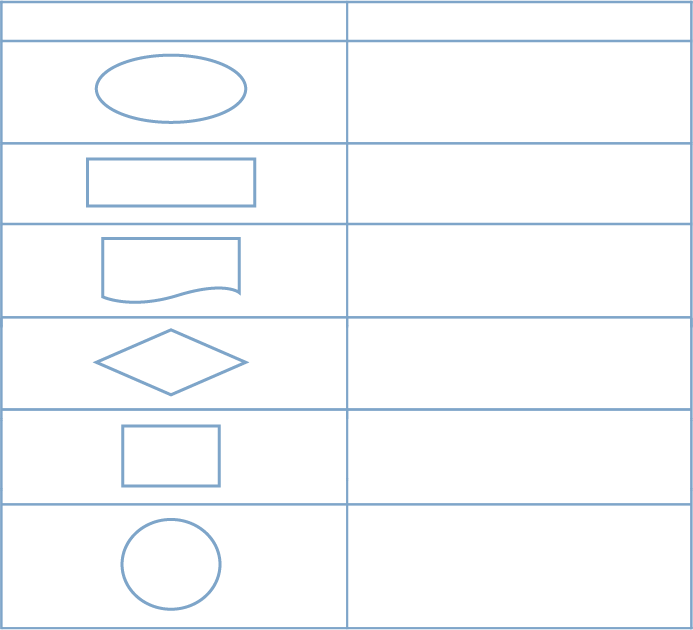
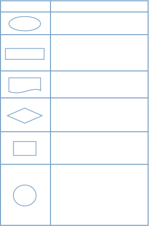

Os processos estão muito presentes na vida das pessoas e das empresas, pois, cada vez que alguém precisa executar uma atividade, necessita, igualmente, se planejar, mesmo que mentalmente, pensando em um passo a passo do que precisa ser feito para concluir aquilo que planejou.
Para entender os processos organizacionais, veja, primeiramente, o que significa processo:
Processo é o conjunto de tarefas sequenciais que são realizadas para alcançar um objetivo, ou seja, são etapas que devem ser desenvolvidas para determinada finalidade.
A contabilidade realiza muitas tarefas diferentes todos os dias. É uma rotina intensa, portanto é preciso ter processos bem organizados, que possam auxiliar as pessoas responsáveis a cumprirem com todas as suas obrigações.
Para que isso ocorra, é necessário que a empresa tenha uma definição clara das tarefas que precisam ser realizadas, como fechamento da contabilidade, manutenção da folha de pagamento, emissão de guias para pagamento e de declarações, entre outras.
É um grande desafio, pois são muitos os processos e documentos envolvidos em todos os departamentos da empresa.
A contabilidade é responsável pelo fechamento da movimentação de todos os documentos que circulam na empresa. Por exemplo, imagine-se trabalhando na contabilidade de uma empresa no ramo do comércio e tendo a responsabilidade de ajudar seu gestor a fechar a contabilidade mensal.
Considerando o exemplo, veja como est√° organizada a empresa:
Figura 1 – Inter-relações
Fonte: <https://www.aedb.br/seget/arquivos/artigos15/27122309.pdf>.
Organograma iniciando no topo com a diretoria; logo abaixo, na mesma linha aparecem a gerência financeira e a gerência comercial. Ligados à gerência financeira estão os departamentos de contas a pagar, contas a receber, departamento pessoal e contabilidade. Ligados à gerência comercial estão os departamentos de compras e de vendas. A gerência comercial controla as compras e as vendas realizadas. A gerência financeira controla o pagamento, o recebimento de todas as contas, bem como o departamento pessoal e a contabilidade. O setor de contas a pagar se responsabiliza por todos os pagamentos da empresa. O setor de contas a receber emite as respectivas notas de vendas e se preocupa com os recebimentos. O departamento pessoal se responsabiliza com as contratações, demissões e o controle de horas extras. A contabilidade é responsável pelo o fechamento do resultado do mês, ou seja, apurará se a empresa está gerando lucro ou prejuízo. O departamento de compras recebe todas as mercadorias que são compradas na empresa, confere as notas fiscais e repassa para o departamento de contas a pagar. O departamento de vendas trata diretamente com o cliente.
São vários departamentos em uma empresa, existindo uma inter-relação entre todos eles, na qual a contabilidade tem a importante função de organizar todas as informações recebidas e emitir relatórios mensais para a tomada de decisões. Cada departamento deve gerenciar os processos que estão sob sua responsabilidade e incluir os outros setores que se relacionarem com o seu processo.
A importância de conhecer os processos organizacionais para o profissional técnico em contabilidade vai muito além dos processos de seu departamento.
Imagine-se trabalhando em uma empresa multinacional na qual constam centenas de processos. Talvez você não conheça todos detalhadamente, mas precisa saber que eles existem, já que a contabilidade faz a gestão de toda a movimentação da empresa.
O seu gestor pode, por exemplo, solicitar dados e informações de outros setores, e é importante que você tenha um breve conhecimento dos processos de cada setor. Contudo, dependendo do tamanho da organização, você conhecerá aos poucos cada setor e seus respectivos processos.
Existem maneiras de organizar os processos em cada empresa, e, para tanto, geralmente são utilizadas representações gráficas que esquematizam os processos, ajudando na visualização e no entendimento do fluxo destes.
O gráfico mais utilizado nas empresas para fazer essa esquematização é o fluxograma. O fluxograma apresenta um formato universal que consegue demonstrar o fluxo do trabalho desenvolvido, inclusive documentos e produtos.
O fluxograma é composto por símbolos específicos que representam as etapas do processo. Existem alguns símbolos padrões e outros que não são muito utilizados. Por isso, recomenda-se que, abaixo ou ao lado do fluxograma de cada processo, seja inserida uma legenda com o significado de cada símbolo, o que facilita a compreensão do fluxo por parte de quem vai consultá-lo.
Veja a seguir o quadro, adaptado de Cury (2017, p. 352 e 353), com os símbolos e os seus respectivos significados:
 
Figura 2 – Quadro de símbolos e significados
Fonte: adaptado de Cury (2017, p. 352 e 353)
Conforme Cury (2017), as vantagens de utilizar os fluxogramas para ilustrar os processos s√£o estas:
Existir√£o processos com poucas ou muitas etapas. Alguns processos s√£o internos de cada setor, e outros relacionam-se com outras √°reas. Em raz√£o disso, haver√° fluxogramas que poder√£o ser desenhados em uma p√°gina e outros que ser√£o maiores. Portanto, n√£o se preocupe com o tamanho, mas, sim, com a qualidade e com o correto desenho dos processos.
Como os fluxogramas geralmente são utilizados para todos os processos da empresa, isso não é diferente para os processos que envolvam a área da contabilidade, principalmente porque muitos relacionam-se com os demais setores, e vice-versa. Portanto, é importante que o profissional técnico em contabilidade tenha conhecimento do fluxograma, pois deve ter a visão de todo o processo, e não somente de suas atividades dentro da empresa.
Sendo assim, pelo fluxograma fica mais fácil perceber todo o trajeto do processo, pois ele tem início em determinada área e pode percorrer diversas outras áreas da organização. Com isso, visualiza-se a inter-relação entre os departamentos da empresa. No momento em que os profissionais estão desenhando os processos, é importante fazer reuniões entre os setores da empresa que fazem parte das etapas daquele processo.
Tal prática facilitará o entendimento de todos, pois cada área exporá a sua maneira de realizar a etapa que corresponde a ela, sendo possível, assim, identificar possíveis falhas que poderão ser sanadas por meio de melhorias que serão feitas no processo.
A inter-relação proporcionará uma visão sistêmica dos processos da organização, ou seja, os colaboradores terão uma percepção geral de como são realizadas as etapas de cada processo. Além disso, será possível entender como as áreas relacionam-se entre si e com o ambiente externo.
Você pode criar um fluxograma manualmente, utilizando as ferramentas disponíveis no Microsoft Office (Word, Excel ou PowerPoint).
Observe esse fluxograma referente ao processo de pagamento de uma folha de pagamento:
Figura 3 – Fluxograma folha de pagamento
Fonte: <https://sites.google.com/site/authenticpalacefad/fluxograma/contabilidade>.
Fluxograma referente à folha de pagamento, na qual existem símbolos diferentes para cada etapa do processo. O fluxograma inicia com a documentação do RH e encerra com o envio da ordem de pagamento para o banco. A legenda encontra-se à direita do fluxograma.
Observe que o fluxograma inicia com a documentação do RH, depois consta o recolhimento de documentos, a análise de fechamento, a pré-aprovação pelo setor financeiro e a análise do documento. O processo é concluído com a aprovação, o envio da ordem de pagamento ao banco e a impressão de duas vias, uma para o banco e outra para o arquivo.
Os processos organizacionais fornecem muitos benefícios para as organizações, pois padronizam e organizam documentos e atividades e auxiliam na execução de ações de planejamento relativas à gestão. Isso porque, por meio do controle dos processos, também é possível identificar inconformidades, para que elas sejam corrigidas e os processos sejam aprimorados. Portanto, com os processos mapeados, as empresas têm mais assertividade no desempenho das diversas atividades das áreas.